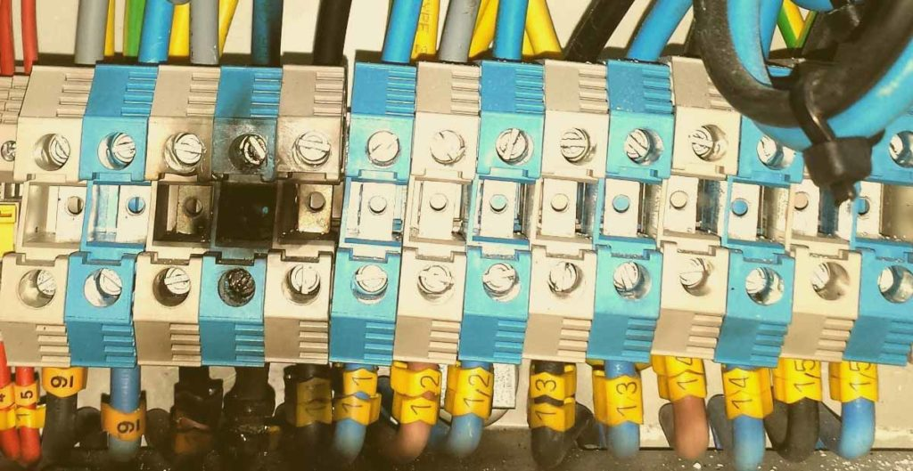

Diagnóstico de averías en instalaciones industriales y sistemas automáticos
6. Tipos de averías más frecuentes en instalaciones eléctricas
En el contexto de las instalaciones eléctricas, hay principalmente tres causas que pueden llevar a la interrupción de dichas instalaciones: falta de corriente, fallo mecánico y fallo en el circuito eléctrico.
Localización de averías
6.1. Avería por falta de corriente
En muchas ocasiones, la causa más común de una avería en una instalación eléctrica es la falta de corriente. Esto puede deberse a diferentes factores, como la ausencia de tensión en la red, fusibles fundidos por sobrecarga, fusibles fundidos por cortocircuito, cables de alimentación cortados, bornes sueltos o fallos de aislamiento en la instalación, que hace que actúe el interruptor diferencial.
Ausencia de tensión en la red
Es importante verificar si hay corriente llegando a la máquina o receptor: comprobar si los pilotos están apagados y medir la tensión de entrada con un voltímetro.
Algunos motores tienen protección por guardamotor, por lo que cuando hay falta de corriente, se desconectan y se requiere pulsar el pulsador de marcha nuevamente para que la máquina vuelva a funcionar.
Otros tipos de máquinas están protegidas por interruptores magnetotérmicos, por lo que cuando se restablece la corriente, el motor se reinicia automáticamente. En algunas ocasiones, la falta de corriente no es causada por una avería, sino por protecciones que han saltado debido a situaciones puntuales. También es posible que la máquina haya sido desconectada accidentalmente sin darse cuenta.
Fusibles fundidos
Pueden ocurrir por sobrecarga o cortocircuito. Es importante reemplazar los fusibles por otros del mismo amperaje y nunca aumentar su calibre. En caso de cortocircuito, se deben localizar y reparar los circuitos afectados.

Efecto de un cortocircuito en bornas de cuadro
Cables de alimentación cortados
Suelen presentarse en cables flexibles de pequeños receptores. Los cortes suelen ser en los extremos y deben ser reparados o reemplazados.
Bornes sueltos
Los bornes suelen aflojarse con el tiempo, causando problemas de conexión. Es necesario apretarlos o reemplazarlos para evitar daños en los cables y posibles incendios.
Fallos de aislamiento y salto de diferencial
Cuando el diferencial salta, puede indicar un problema en algún receptor específico o en la línea. Es importante revisar y reparar los circuitos afectados, así como asegurar un correcto aislamiento.
Recuerda
En casos de fallos de aislamiento y salto de diferencial, lo que nunca debemos de hacer es anular el diferencial, puentearlo o quitarlo.